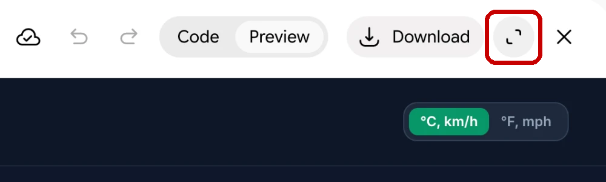
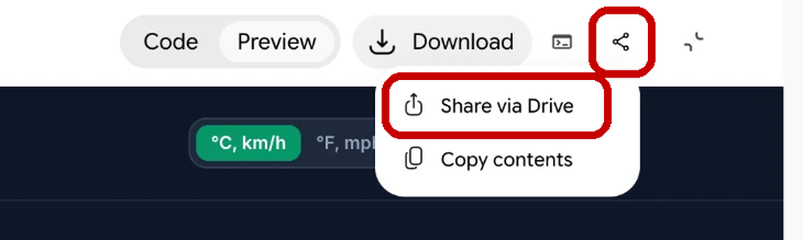

Open Gemini
On your laptop, signed in on your work account.
SLGGemini Canvas · Two short sessions
In the first session you'll build a working app from one sentence, then plug it into live data from the internet. In the second, we'll look at what you've built and how to share it.
No coding experience necessary
“The hottest new programming language is English”
Andrej Karpathy · January 2023
The plan
Most of the time goes on you building. I'll do the first one on the big screen, so nobody gets left behind.
Done the full workshop?
You've done this before. Today, the most useful thing you can build is someone else's first app.
Sit beside someone new to it. Most snags come in the first five minutes, so that's when a nudge helps most. Point rather than take the keyboard. Then build your own, or skip ahead to Part 3.
Before we start · Two minutes
Do these while we get going. If any of them doesn't work, put your hand up.
On your laptop, signed in on your work account.
Click the + button, then More tools, then Canvas. A Canvas chip appears by the prompt box when it's on.
"Make me a button that says hello." If something appears, you're set.
How to work today
None of these are about code. All of them are about not getting stuck.
Click any prompt and it's on your clipboard, ready to paste. You'll see Copied appear in the corner. Nothing today needs retyping. The slides live here, and they're yours to keep.
If you stack five changes into a sentence you'll get four of them and no idea which one it dropped.
Sometimes the preview won't load, or the app drifts somewhere you didn't want. That's the tool having a moment, not you. Open a new chat, paste your first prompt again, and you'll get there faster than by arguing it back.
I'll build it on the big screen, and you build yours alongside. No data, no setup. One sentence, and the code does all the work itself.
Part 1 · Building live
One sentence, deliberately vague. Watch what it decides for itself.
Paste this into Canvas
Create an app that calculates the cost of a meeting.
Now actually use it. Put real numbers in. What did it assume without asking you? What's missing, and what's simply wrong?
Part 1 · Iteration
You don't edit the code, you say what you want instead. Pick one of these and click it to copy.
Make it live
"Make the total tick up live while the meeting runs, with Start, Pause and Reset buttons."
Make it look better
"Make this a dark-mode dashboard with one big headline number."
Make it sting
"Underneath, tell me what else that money could have bought."
Check the data
"Find reliable data on different broad types of job and salaries, then build those figures into the app to make it more accurate."
That's vibecoding. Describe it, look at what you get, say what's wrong, and go again. Everything else today is the same move.
The app we just built works, but it lives in a bubble. It only knows what it was built with, or what you type into it. And unless you provided it with reliable data, you're trusting whatever it took from its training data.
Part 2 · What an API is
An API is a tap you can plumb directly into your app. You send a request, and structured data comes back.
Your app asks
It sends a question to a service on the internet. "What's the weather in Leeds tomorrow?"
The API answers
In data built for software, not people: a temperature, a chance of rain, a wind speed. Your app turns that into something you can read.
You don't do the plumbing
Name the API in your prompt and Gemini writes the code that asks and reads the answer. Your job is to pick a good source, and to check what comes out.
The four you'll use are free and need no sign-up. Out in the wild, some APIs want a key, which works like a password and is tied to you. Never paste a key into Gemini.
Part 2 · Your turn · 1 of 3
Each uses a different source of live data. Start a new chat with Canvas on, click a prompt to copy it, and paste it in. Can't decide? Pick one nobody near you has picked.
Click to copy
I want to use the Open-Meteo API to build an app where I type a town and it tells me whether tomorrow is a good day to cycle to work, showing the temperature, the chance of rain and the wind. Tell me when it's loading and if there's an error.
Click to copy
I want to use the TfL Unified API to build an app that shows the live status of every Tube line, with any delays at the top and the reason for each. Tell me when it's loading and if there's an error.
Click to copy
I want to use the Nager.Date public holidays API to build an app where I pick a country and it shows the next public holidays there, flagging any that make a long weekend. Tell me when it's loading and if there's an error.
Click to copy
I want to use the Open-Meteo air quality API to build an app where I type a town and it tells me how clean the air is there today, with a simple rating from good to poor. Tell me when it's loading and if there's an error.
Part 2 · Your turn · 2 of 3
Same again: new chat, click a prompt to copy it, paste it in.
Click to copy
I want to use the Wikipedia "On this day" API to build an app that shows what happened on today's date in history, with a picture for each event where there is one. Let me pick another date. Tell me when it's loading and if there's an error.
Click to copy
I want to use the Wikipedia featured content API to build an app that shows yesterday's most-read English Wikipedia articles, with how many views each got and a picture where there is one. Tell me when it's loading and if there's an error.
Click to copy
I want to use Postcodes.io and the UK Parliament Members API to build an app where I type a postcode and it shows me the local MP, with their photo, party and constituency. Tell me when it's loading and if there's an error.
Click to copy
I want to use the USGS earthquake feed to build an app that maps every earthquake in the world in the last 24 hours, with the biggest listed first. Tell me when it's loading and if there's an error.
Part 2 · Your turn · 3 of 3
Same again: new chat, click a prompt to copy it, paste it in.
Click to copy
I want to use the Frankfurter API to build an app that shows what £1 buys in euros and US dollars today, with a chart of the last 30 days. Tell me when it's loading and if there's an error.
Click to copy
I want to use the Datamuse API to build an app where I type a word and it suggests shorter words that mean the same thing, for writing headlines. Tell me when it's loading and if there's an error.
Click to copy
I want to use the iTunes Search API to build an app where I type a topic and it shows the top podcasts about it, with their artwork and who makes them. Tell me when it's loading and if there's an error.
Click to copy
I want to use the V&A collections API to build an app where I type a subject and it shows objects from the V&A museum about it, with a picture of each. Tell me when it's loading and if there's an error.
Part 2 · Once it works
Say what you'd change, one thing at a time. These work on any of the twelve. Click one to copy it.
Make it look better
"Give this a cleaner design, with the most important number big at the top."
Make it fit a phone
"Make this work well on a phone screen."
Show your source
"Add a line at the bottom saying where the data comes from and when it was last updated."
Make it useful
"Add a button that copies a one-line summary I can paste into an email."
Check its working
"Explain in plain English what this app does with the data, and anything you assumed."
Fix it
"Something's wrong: [say what you see]. Please fix it."
Stuck? Paste any error message straight back into the chat. Still stuck after two goes? Start a new chat and paste your first prompt again. It often comes out differently the second time.
If you have time now, or if you want to explore more over lunch or another day, these two steps can make your vibecoding work richer and more interesting.
Part 3 · Step one · Two sources at once
Most useful apps draw on more than one source. You don't have to join them up yourself: name both in your prompt and say what you want at the end.
You type
N1 9GU
A postcode
Postcodes.io answers
51.53, −0.12
Where that postcode is on the map
Open-Meteo answers
Tomorrow's weather
Temperature, rain and wind for that spot
Try it in a new chat
I want to use Postcodes.io and the Open-Meteo API to build an app where I type a postcode and it tells me tomorrow's weather there. Tell me when it's loading and if there's an error.
Neither could do it alone. Open-Meteo doesn't understand postcodes, and Postcodes.io knows nothing about weather. The Who's my MP? build does the same trick.
Part 3 · Step two · Add the brain
Until now the app has only fetched facts. This puts an LLM inside it, so it can think about what it found. In Canvas it's already wired up: nothing to sign up for and nothing to paste.
The API answers
The facts
Tomorrow's temperature, rain and wind
Gemini reads them
A judgement
What those facts mean for you
Your app shows
Both, side by side
So you can check one against the other
Add this to your weather app
Add a button labelled "What should I wear?". When clicked, send tomorrow's forecast to Gemini and ask it for a one-line suggestion. Show the answer under the forecast.
It works on any of the twelve. Change the button and the question: a briefing, a verdict, a note for the office.
Part 3 · The other side of the handoff
Everything before the button came straight from an API. If the source is sound and the question is right, so is the data. What the model wrote works differently.
What comes with it
Ask a model to summarise, rewrite, judge or explain and you take on everything that comes with one: it can invent things, it smooths the specific into the general, and it is only ever as good as your instruction.
Check every transformation
Anything the model rewrote, summarised or judged needs reading against the data it was handed. Not once on the day you built it. Every time it matters.
Show the source, not just a warning
A note saying the text is AI-generated moves the risk onto the reader without helping them. Keep the raw figure beside the sentence written about it, so anyone can check at a glance.
Over to you
Read what your button wrote against the data on screen. Did it get anything wrong?
Part 3 · Show and tell
Two or three of you on the main screen. Volunteers, or I'll pick.
What did you build?
Which one, and what did you change once it worked?
What surprised you?
Something it did that you didn't ask for, good or bad.
What did it get wrong?
And would you have noticed if you hadn't gone looking?
The point of the whole session
“The API gives you the facts. The LLM allows you to transform and illustrate them in interesting ways. The magic is in the handoff.
And you can wire those two things together with a sentence.
Part 3 · Before you send anyone a link
Before you share
Building something that works in twenty minutes is a thrill. It is not the same as having something tested. If it does anything that matters, spend real time checking it, look hard at what it actually outputs, and show it to one person who knows the subject before you go any wider.
Choose named people, not anyone with the link. If the app touches anything internal or protected, everyone you send it to must already have access to that data. Sharing the app must never become a way of sharing the data.
Sharing · Step by step
Canvas hides the share button until you open the app up full size, so that's the first step.
Click the expand button in the top corner, next to Download. The app fills the screen.

A share button has now appeared. Click it, then choose Share via Drive.

Part 3 · What to take away
That's the session
Thanks.
You're keeping this deck, so every prompt from today comes with you. Click any of them.